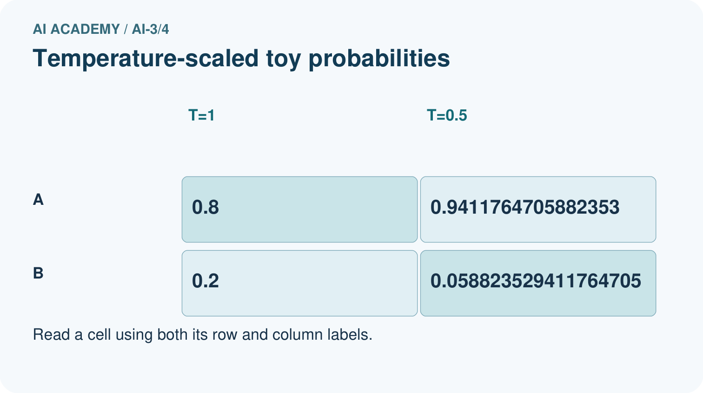
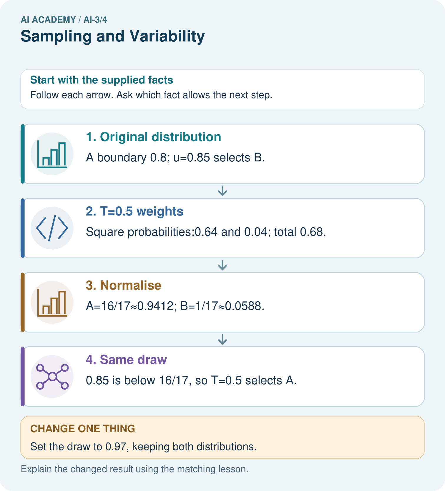

AI Academy · Level 3 · Grade 8 · Week 4 · Teacher guide
Sampling and Variability
Learn to understand, design, build, test and explain AI systems responsibly.
Project: Verified Study Buddy
Teacher guide · 1 of 7
Sampling and Variability
Teach the learning cycle
Primary target: Sample from a distribution using explicit cumulative intervals
| Session | Sequence and minutes | Resources |
|---|---|---|
| Session 1 · Understand · 45 min | 0–7: recall and prerequisite; 7–15: inspect the concrete case and predict; 15–30: teacher models the worked trace; 30–40: learners explain a step using the text and visual; 40–45: check the core idea. | Sections 1–6; record the brief recall in the workbook. |
| Session 2 · Practise · 45 min | 0–5: retrieve the procedure; 5–15: W2 completion practice; 15–23: explain and check with a partner; 23–30: each learner answers the misconception check; 30–40: targeted reteaching or a harder variation; 40–45: prepare the investigation. | Sections 7–10; use the matching workbook W2 and misconception check. |
| Session 3 · Investigate and transfer · 45 min | 0–5: retrieve the decision rule; 5–20: investigate or trace; 20–30: start the independent case; 30–38: connect the project; 38–43: act on feedback; 43–45: plan the return check. | Sections 9 and 11–14. Give extra time to finish the full task set; use Section 15 when the week includes a coding lab. |
This is a starting allocation of 135 minutes, not a validated duration. Preserve all named topics. Schedule extra time for connected examples, the full investigation, independent cases and project building. Repeated copies of a case share one recorded attempt; they are not new evidence.
Retrieval answer guidance
Tokens and Context
Without opening the old lesson, explain one key idea from Tokens and Context. Give an example and a mistake that the idea helps you avoid.
Look for: Account for fixed text, evidence and reserved output under a toy budget
Reference example, not the only acceptable wording: Teacher explanation: 100-20-10-20 = 50 supplied token units.
Predictive and Generative AI
Without opening the old lesson, explain one key idea from Predictive and Generative AI. Give an example and a mistake that the idea helps you avoid.
Look for: Distinguish discriminative prediction from generation by inspecting the requested output
Reference example, not the only acceptable wording: Teacher explanation: Message labels are discriminative prediction; continuing a sequence is generation; record lookup is retrieval rather than learned generation by itself. One application can route a request, retrieve evidence and generate a response.
Use the student module and workbook section with this exact week title. The worked case, independent question and answers below form one aligned lesson sequence.
What the learner must demonstrate
Prompt A gives three identical wrong answers. Prompt B gives two correct answers and one wrong answer. Compare consistency and correctness without declaring either generally superior.
Concept to explain
Decoding choices trade consistency, diversity, and risk.
| Term | Meaning |
|---|---|
| decoding | Selecting output tokens from a model's scores using a specified procedure. |
| variability | Differences observed across repeated runs, samples or conditions. |
| temperature intuition | A rough understanding of how temperature rescales token scores: higher values commonly spread choices more, without guaranteeing creativity or truth. |
| seeded test | A test containing a deliberately planted, known condition or error to check whether it is handled. |
Prepare the class
Use the supplied scenario, student illustrations and blank paper. For numeric work, offer counters or a calculator after learners show the setup. Fictional records are supplied; personal data and paid accounts are unnecessary.
Allow 80 minutes: recall 8; explanation 12; worked demonstration 15; guided practice 20; independent assessment 15; project and reflection 10. Extend the lab into a second session when needed.
Preparation for the connected explanation
Use two 45-minute sessions. All model outputs and probability tables are constructed classroom examples. No hosted AI service, external API or student account is needed. Distinguish a model objective from factual support and system permissions. Collect independent work before discussing its solutions.
Readiness answer
No. Later conditional probabilities can change path rankings, as the two-step counterexample shows.
Printed lesson and workbook; paper and pencil
Calculator; optional local Python 3 interpreter
Prepare the independent task and fresh retry without displaying solutions
Apply the connected idea: A small attention calculation
Use two 45-minute sessions. All model outputs and probability tables are constructed classroom examples. No hosted AI service, external API or student account is needed. Distinguish a model objective from factual support and system permissions. Collect independent work before discussing its solutions.
Readiness answer
Normalise the permitted weights by their remaining total; handle an empty set explicitly.
Printed lesson and workbook; paper and pencil
Calculator; optional local Python 3 interpreter
Prepare the independent task and fresh retry without displaying solutions
End goal for the pictorial case
By the end, I can calculate a toy temperature change and trace a sampling draw.
This added worked case illustrates the week’s main idea. Retain all original and connected topics; schedule its practice within the teaching cycle.
Teacher guide · 2 of 7
Explain the mechanism
Explain the mechanism
Input → Process → Output
Trace the information. At each stage, ask what changed and how you could test it.
Which stage could fail even when the other two are correct? Explain:
Predict first. Then check each step. A correct answer without visible reasoning is incomplete evidence.
1. Low variability favors high-weight continuations repeatedly.
2. Higher variability gives lower-weight options more chances.
3. Diversity may help brainstorming but can increase off-task or unsupported detail.
4. Choose settings by task, then evaluate repeated runs—not one favorite output.
Recalculate, retrace, or restate the reasoning in your own representation:
CHECK Did the evidence answer the exact question? Did the total, path, or source record stay consistent?
Concrete teaching case
One prompt produces three different valid quiz questions.
Does variability mean failure?
Exact explanation to model
No. Sampling can vary outputs. Score correctness, relevance and format over repeated trials; consistency differs from quality.
Explain the added worked example
Start with probabilities red 0.6, blue 0.3, green 0.1 in that fixed order. Greedy chooses red. Sampling uses a draw u with 0 <= u < 1 and cumulative intervals: red [0,0.6), blue [0.6,0.9), green [0.9,1). Left endpoints are included, right endpoints excluded. Thus u=0.6 selects blue and u=0.9 selects green. The draw 1 is outside this contract.
Sampling does not mean choosing all tokens equally. Across many independent draws the frequencies may approach the specified probabilities, but a small sample need not match them exactly. Fixed recorded draws allow a reproducible classroom trace. A random seed and generator version help replay a real sampling program, not establish the truth of outputs.
For strictly positive probabilities p_i and temperature T>0, define q_i = p_i^(1/T) / sum_j p_j^(1/T). This classroom formula is equivalent to scaling logits before a softmax when p came from those logits. We use it directly on the supplied table. At T=1 the distribution is unchanged. At T=0.5, square each probability: 0.36,0.09,0.01; total 0.46. The adjusted distribution is red 18/23, blue 9/46, green 1/46.
Key terms
| Term | Meaning |
|---|---|
| Sampling | Selecting an alternative using a specified random procedure |
| Greedy choice | Selecting an alternative with largest next-token probability under a tie rule |
| Temperature | A positive parameter that changes the concentration of a distribution under a stated transformation |
| Cumulative interval | A range of draws assigned to an alternative using accumulated probability mass |
Apply the connected idea: A small attention calculation
For one query q and keys k_i of width d, compute score s_i = dot(q,k_i)/sqrt(d). Then obtain weights from softmax and combine value vectors. Dot products may be negative; probabilities cannot. The softmax performs the conversion. This is a single-head classroom calculation, not a full language model.
Define softmax weights as exp(s_i-m)/sum_j exp(s_j-m), where m is the maximum permitted score. Subtracting the same maximum from every permitted score leaves the ratios unchanged and avoids unnecessary overflow from large positive scores. Natural exponent exp is introduced here; use a calculator or Python math.exp rather than estimating its meaning from the word exponential.
Take q=[1] and d=1. The scale sqrt(1) is 1, so scores are 0 and ln(3). ln(3) is the number whose natural exponential is 3, approximately 1.098612. Exponentials have ratio 1:3, hence weights 1/4 and 3/4. Output is (1/4)*2 + (3/4)*6 = 5. Using maximum subtraction gives exponentials 1/3 and 1 and the same normalised weights.
Guided: shifted scores -ln(3),0; exponentials 1/3,1; weights .25,.75; output .25*4+.75*8 = 7. Exit: both coefficients are .5; opposite values cancel to zero.
Model the reasoning aloud
Use the complete worked example below before asking learners to complete W2. Reveal a small part, invite a prediction, then explain the deciding step. These teacher notes contain solutions; do not reveal the independent case answer during modelling.
The lower positive temperature concentrates this table on its largest entry. For T=2, use square roots before normalising; this flattens this unequal distribution. These changes leave the order of positive probabilities unchanged, so greedy still selects red. They change the sampling distribution, not the factual evidence behind a generated claim.
Our formula excludes T=0; dividing by zero is undefined. Some systems offer a zero-temperature setting as a separate greedy policy, but that is not a value to substitute into this formula. We also avoid claiming that any one setting removes all nondeterminism in an unspecified system.
| Thinking move | Teacher prompt |
|---|---|
| Plan | What is given? What is the question? Which procedure fits these facts? |
| Do | Point to each input and intermediate step in the worked trace. Name the rule that allows the next step. |
| Check | Does the output answer the question? Which assumption or limitation prevents a larger claim? |
Use the diagram and verbal explanation together. Ask learners to match a sentence to a specific visual step; do not assign learners fixed visual or auditory learning styles.
A pictorial worked case: Sampling and Variability
A fictional two-token distribution illustrates variability in generation.
The facts we will use
At T=1, A=0.8 and B=0.2. For positive T use p^(1/T), then normalise.
Use token order A,B and cumulative intervals [0,boundary),[boundary,1). Draw u=0.85.


Read the picture one step at a time
Why this result follows
Lower positive temperature concentrates this unequal distribution on its larger entry. It changes sampling probabilities, not evidence for whether A or B is true. Using the same draw isolates how the distribution changes the decision. This formula is a toy probability-space illustration corresponding to a temperature-scaled model distribution.
What this example does not establish
Two tokens and one draw do not predict every output; temperature alone does not solve hallucinations.
Change one thing in the pictured case
Change: Set the draw to 0.97, keeping both distributions.
Prediction: Both temperatures select B.
Reason: 0.97 exceeds both A boundaries, 0.8 and approximately 0.9412.
Ask while showing the picture
Cover the result. Ask learners to name the inputs and predict the next step. Uncover one step, connect the icon to the actual procedure, and explain its evidence. Then change the supplied condition and compare. The picture is a representation; it does not document execution of a real AI model.
Teacher guide · 3 of 7
Demonstrate and guide practice
Demonstrate and guide practice
Board sequence
Write the given facts: One prompt produces three different valid quiz questions.
Write the question to explain: Does variability mean failure?
Reveal after predictions: No. Sampling can vary outputs. Score correctness, relevance and format over repeated trials; consistency differs from quality.
Keep for an independent attempt: Prompt A is run three times and returns three different stories. Does this alone prove the prompt changed? Describe a fair comparison of two prompts.
Classroom dialogue
Ask: Which facts are given, and which would we have to assume? Learners mark relevant details before discussing answers.
Say: Predict first. Show the rule, information path or calculation that would produce the result. A correct guess is not yet an explanation.
Reveal reasoning one step at a time. Explain why a tempting alternative fails. Write units and denominators for arithmetic, trace conditions for decisions, and identify supporting sources for claims.
In pairs, one learner solves while the other checks evidence; exchange roles. Remove the worked answer before independent assessment.
Model these guided questions
Guided: T=1 gives red,blue,green; T=0.5 gives red,red,blue. Three fixed draws check the procedure, not expected long-run proportions. Exit: concentration changed; the claim of impossible factual errors lacks source-grounded evaluation and cannot be established by temperature alone.
Case-specific teaching sequence
| Stage | Teacher action |
|---|---|
| Session 1 start to 7 minutes | Retrieve the prerequisite and distinguish a numerical claim from its interpretation. |
| 7 to 18 minutes | Read section 1 and complete W1; ask for a reason alongside each answer. |
| 18 to 32 minutes | Trace the worked case in section 2 and complete W2. |
| 32 to 45 minutes | Discuss the diagram and complete W3 in pairs; record support. |
| Session 2 start to 8 minutes | Complete the guided response before sharing the answer. |
| 8 to 20 minutes | Read the remaining sections and trace another constructed case. |
| 20 to 35 minutes | Collect W4 independently, requiring calculations and a bounded conclusion. |
| 35 to 45 minutes | Discuss W5 and the exit response. Provide feedback and a fresh retry. |
Teach the connected idea
| Stage | Teacher action |
|---|---|
| Session 1 start to 7 minutes | Retrieve the prerequisite and distinguish a numerical claim from its interpretation. |
| 7 to 18 minutes | Read section 1 and complete W1; ask for a reason alongside each answer. |
| 18 to 32 minutes | Trace the worked case in section 2 and complete W2. |
| 32 to 45 minutes | Discuss the diagram and complete W3 in pairs; record support. |
| Session 2 start to 8 minutes | Complete the guided response before sharing the answer. |
| 8 to 20 minutes | Read the remaining sections and trace another constructed case. |
| 20 to 35 minutes | Collect W4 independently, requiring calculations and a bounded conclusion. |
| 35 to 45 minutes | Discuss W5 and the exit response. Provide feedback and a fresh retry. |
Reduce help deliberately
Completion task: At T=0.5 compute squared weights, total and normalised probabilities. Check the sum.
Teacher check: Teacher explanation: Weights 0.36,0.09,0.01 sum 0.46. Probabilities 18/23,9/46,1/46 sum 1.
Start by identifying the given inputs together. Leave the intermediate steps blank. If needed, model one step, then withdraw that help on the next step. Move to a full trace only when the partial trace is understood. For partners, alternate explainer and checker; collect a response from every learner before discussion.
Individual reasoning check
Use the worked case for Sampling and temperature. Proposed explanation: “Sampling means equal chances”. Decide whether this explanation is supported. Point to the step or supplied fact that decides; explain your repair if needed.
Expected correction: Intervals have widths equal to the probabilities; unequal widths give unequal chances.
Collect explanations, not only yes/no votes. If a misunderstanding is common, re-model the relevant step for the class. If it affects a few learners, give a short targeted group explanation while others solve a more demanding variation.
Connected teaching cycle: A small attention calculation
Target: Compute scaled query-key scores and softmax weights
Reserve further sessions for this topic; the 135-minute primary plan does not absorb all added content.
Completion practice: Use values [2],[6] for the preceding weights. Compute output and output when the second key is excluded.
Teacher check: Teacher explanation: Full output 5; with B excluded, weight A=1 and output 2.
Individual check: For A small attention calculation, use its worked case to evaluate this proposed explanation: “Scores already are probabilities”. Explain the deciding step.
Expected correction: Scores may be negative or fail to sum to one; softmax supplies normalised nonnegative weights.
Apply the same support, independent transfer and delayed-review decisions to the named connected-topic workbook tasks.
Pictorial practice question
Does T=0.5 make B impossible, and does choosing A guarantee factual accuracy?
Reasoned teacher answer
No. B still has probability 1/17, and the table supplies no truth labels for either token.
Changed-case reasoning: Both temperatures select B. 0.97 exceeds both A boundaries, 0.8 and approximately 0.9412.
Collect each learner’s explanation before discussion. Use the first missing connection between input, deciding step and result to choose support. This question is worked-case practice, not fresh mastery evidence.
Teacher guide · 4 of 7
Run the weekly evidence lab
Run the weekly evidence lab
Words You Can Use to Reason
A definition matters when you can recognize the idea, use it, and contrast it with a near-miss.
Predict → Test → Record → Explain
Keep expected and actual results separate. Surprises are useful data when recorded honestly.
Run each setting five times on one fixed prompt, score consistency, usefulness, and unsupported detail, then justify a task-specific choice.
What did the hardest test teach you that the normal test did not?
Make the lab runnable
Use the concrete case as the shared normal case and the independent question as a second case. Each pair creates a boundary or missing-information case and predicts its result before testing. Keep the expected result separate from an observed mistake.
| Record | What to capture |
|---|---|
| Input or evidence | Exact data, instruction or claim |
| Expected result | Answer or safe fallback declared before the run |
| Observed result | Actual result, including errors |
| Explanation | Rule, calculation or evidence explaining the outcome |
| Next test | One justified change and a new prediction |
Diagnose and reteach
For guessing, return to given facts and request a trace. For vocabulary without application, use one example and one non-example. For arithmetic errors, check the setup before the calculation. Finish with a different uncoached case before recording mastery.
Address these additional misconceptions
Sampling means equal chances: Intervals have widths equal to the probabilities; unequal widths give unequal chances.
T=0 can be inserted into p^(1/T): The formula requires T>0; greedy is a separate policy.
Lower temperature verifies claims: A probability transformation does not add factual evidence.
Check these misconceptions
Scores already are probabilities: Scores may be negative or fail to sum to one; softmax supplies normalised nonnegative weights.
Value width must equal key width: Values share a common output width, which can differ from query/key width.
Zero output means no source contributed: Nonzero weighted contributions may cancel.
Match the support to the first error
| What the response shows | Next teaching action |
|---|---|
| Missing or misread facts | Read the case aloud, mark supplied versus unknown facts, and let the learner restate it. |
| Wrong procedure | Return to the deciding step in the worked case. Contrast it with the proposed incorrect explanation. |
| Arithmetic or implementation error | Trace intermediate values or lines; preserve the first mismatch and retry that step. |
| Correct result without a reason | Ask for a trace and a changed case before marking independent understanding. |
| An unsupported wider claim | Ask which supplied evidence supports the claim and which further observation would be needed. |
Offer an oral explanation, drawing, enlarged visual or fewer examples when that removes a reading/writing barrier. Keep the same reasoning goal. Stretch secure learners by changing a boundary or assumption and asking them to defend the effect, not simply by assigning more of the same questions.
Teacher guide · 5 of 7
Assess and explain the answers
Assess and explain the answers
Worked case answer
No. Sampling can vary outputs. Score correctness, relevance and format over repeated trials; consistency differs from quality.
Independent question
Prompt A is run three times and returns three different stories. Does this alone prove the prompt changed? Describe a fair comparison of two prompts.
Expected independent answer
Sampling can produce variation with an unchanged prompt. Run both prompts on the same tasks, record settings, repeat trials and judge with the same rubric.
What counts as evidence
| Criterion | 0 points | 1 point | 2 points |
|---|---|---|---|
| Result | Incorrect or absent | Partly correct | Correct with necessary conditions |
| Reasoning | No supporting trace | Some steps | Clear mechanism, calculation or source support |
| Limit | Overclaims certainty | Vague limitation | Relevant uncertainty or missing fact |
| Transfer | Copies without adapting | Adapts with prompts | Solves a changed case independently |
Use 6/8 as a classroom checkpoint, with 2 required for both Result and Reasoning. This is a proposed teaching rule, not a validated certification threshold. Do not count a coached answer as independent mastery; correct unsafe or unsupported claims regardless of total.
Feedback
Ask the learner to find the evidence that challenges this claim: “Any difference between outputs proves a difference between prompts.” Keep the first attempt and an uncoached retry separate.
Original transfer answer
A is consistent but 0/3 correct; B is less consistent but 2/3 correct on these trials. Repeat on predefined varied cases and keep conditions fixed. Identical output is not evidence of quality.
Explanations for the additional workbook examples
W1 Trace boundaries
At T=1 select tokens for u=0,0.6,0.9 and 0.999. Explain the handling of u=1.
Teacher explanation: Selections red,blue,green,green. The draw 1 violates the half-open [0,1) input contract and must be rejected.
W2 Compute the adjusted table
At T=0.5 compute squared weights, total and normalised probabilities. Check the sum.
Teacher explanation: Weights 0.36,0.09,0.01 sum 0.46. Probabilities 18/23,9/46,1/46 sum 1.
Under the lesson’s supplied temperature procedure, T=0.5 means exponent 1/T=2. Square the weights to obtain 0.36, 0.09 and 0.01; their total is 0.46. Divide each by 0.46 to obtain 18/23, 9/46 and 1/46. Converting 18/23 to 36/46 shows that the sum is (36+9+1)/46 = 1.
W3 Compare a fixed draw
Trace u=0.7 at T=1 and T=0.5. Does the different output demonstrate improved factual accuracy?
Teacher explanation: T=1 selects blue; T=0.5 selects red. This follows changed intervals and supplies no factual correctness evidence.
W4 Sample a new table independently
Probabilities A=0.5,B=0.3,C=0.2 in that order. Compute T=0.5 probabilities and cumulative boundaries. Trace u=0.5 and u=0.9 under T=1 and T=0.5. Explain the limit of the comparison.
Teacher explanation: Squared weights 0.25,0.09,0.04 total 0.38. Probabilities 25/38,9/38,4/38; boundaries 25/38 and 34/38. T=1: 0.5 selects B,0.9 selects C. T=0.5: 0.5 selects A,0.9 selects C because 0.9 > 34/38. The trace shows distribution effects, not factual accuracy.
W5 Specify a valid experiment
A student changes the prompt and model as well as temperature, then attributes a better answer to temperature. Propose a fair comparison and reject any unsupported universal claim.
Teacher explanation: Fix prefix/prompt, model/version, candidate distribution and sampling policy while varying temperature. Record draws and evaluate stated task criteria across cases. The mixed comparison cannot isolate temperature; even a controlled result cannot prove all future outputs correct.
A small attention calculation — W1 Compute scores and weights
For q=[1], keys [0],[ln(3)] and d=1, compute scores and softmax weights.
Teacher explanation: Scores 0,ln(3); exponential ratio 1:3 gives weights 1/4,3/4.
The dot products are 1*0=0 and 1*ln(3)=ln(3). Division by sqrt(d)=sqrt(1)=1 leaves them unchanged. Exponentiation gives 1 and 3, with total 4. Normalising gives weights 1/4 and 3/4. These are compatibility weights under the stated calculation, not truth scores.
A small attention calculation — W2 Combine and mask
Use values [2],[6] for the preceding weights. Compute output and output when the second key is excluded.
Teacher explanation: Full output 5; with B excluded, weight A=1 and output 2.
A small attention calculation — W3 Trace equal scores
For q=[1,1], keys [1,0],[0,1], values [2,0],[0,4], compute scaled scores, weights and output.
Teacher explanation: Both scores 1/sqrt(2); weights .5,.5; output [1,2].
The query has dot product 1 with each key. Both scores are therefore 1/sqrt(2). Equal scores give equal softmax weights, 0.5 each. Combine the values coordinate by coordinate: 0.5*[2,0] + 0.5*[0,4] = [1,2].
A small attention calculation — W4 Calculate new attention independently
q=[1], keys [0],[ln(2)],[ln(3)], values [0],[3],[8], width 1. Compute scores, weights and output. Then mask the third item and recompute. Explain whether output establishes a factual claim.
Teacher explanation: Scores 0,ln(2),ln(3); weights 1/6,2/6,3/6. Output 0+1+4=5. Mask third: weights 1/3,2/3,0; output 2. Neither weighted output verifies a factual claim.
A small attention calculation — W5 Check stability and shape
Scores are 1000 and 1000+ln(3); values 4 and 8. Compute stable shifted weights and output. What if one key has width two and the query width one?
Teacher explanation: Shift to -ln(3),0; weights 1/4,3/4 and output 7. Mismatched key/query widths must be rejected rather than silently truncating.
Assess independent transfer
Selected case: Probabilities A=0.5,B=0.3,C=0.2 in that order. Compute T=0.5 probabilities and cumulative boundaries. Trace u=0.5 and u=0.9 under T=1 and T=0.5. Explain the limit of the comparison.
Selected case answer
Teacher explanation: Squared weights 0.25,0.09,0.04 total 0.38. Probabilities 25/38,9/38,4/38; boundaries 25/38 and 34/38. T=1: 0.5 selects B,0.9 selects C. T=0.5: 0.5 selects A,0.9 selects C because 0.9 > 34/38. The trace shows distribution effects, not factual accuracy.
| Dimension | Evidence required |
|---|---|
| Explanation | Names the applicable idea or procedure and ties it to the supplied facts. |
| Trace and result | Preserves the given inputs and shows the relevant intermediate steps; distinguishes a prediction from an observed execution. |
| Limits | States the assumptions, missing evidence or conditions under which the result would change. |
Record each dimension as not yet, with support, or independent. Accept a valid alternative procedure with a defensible trace. Do not penalise an honestly recorded model failure if the learner correctly explains its evidence and limits.
Feedback that the learner uses
Name the earliest unsupported step and give one action to repair it. Have the learner make that repair now and explain why. Then assess the relevant skill on a fresh, fully specified case. Confirm it was not previously practised with feedback; solve and check the new case before assigning it. A follow-up design prompt is a starting brief, not automatically an equivalent test.
Teacher guide · 6 of 7
Connect and extend learning
Connect and extend learning
Verified Study Buddy
Use low variability for structured study answers and allow more diversity only for labeled brainstorming.
Keep the decision, input, result, explanation and remaining limitation in the project evidence record. Retrieve this record next week rather than restarting the project.
Support and stretch
Provide one short approved passage; separate instruction, input, output and evidence. Stretch: introduce an unsupported claim or conflicting source and validate claim by claim with a fallback.
Exit reflection
Ask for one decision the learner can now justify and one situation requiring more evidence or human review. Confidence ratings are separate from correct independent performance.
Bridge to the next week
Next: Week 5: Prompt as a Contract. Retrieve today’s evidence and identify what carries forward and what is new.
Support and fresh reassessment
Provide labelled intermediate columns and allow a calculator. Ask students to state the meaning and denominator of a value before interpreting it. Extension: implement the classroom calculation locally and test boundary cases without using personal data.
W4 requires probabilities 25/38,9/38,4/38, correct boundaries and B/C versus A/C. Fresh retry: A=0.4,B=0.4,C=0.2; at T=0.5 probabilities 4/9,4/9,1/9. Draws 0.4 and 0.85 select B,C at T=1 but A,B at T=0.5. Greedy ties must use an explicit rule.
Week 5 connects token IDs to embedding vectors and introduces position information without treating IDs as semantic measurements.
Readiness and reassessment for A small attention calculation
Provide labelled intermediate columns and allow a calculator. Ask students to state the meaning and denominator of a value before interpreting it. Extension: implement the classroom calculation locally and test boundary cases without using personal data.
W4 requires weights 1/6,1/3,1/2 and outputs 5 then 2. Fresh retry: keys [0],[ln(3)],[ln(4)], values [2],[6],[0]. Weights 1/8,3/8,4/8; output 2.5. Exclude third: weights 1/4,3/4,0; output 5.
Plan the delayed return
Suggested return points in this level: ai-3/5, ai-3/7, ai-3/10. Use actual classroom dates, adjusting for holidays and gaps. One, three and six teaching weeks are scheduling choices, not a claimed optimal spacing.
At a delayed check, ask for the idea from memory and a changed application. Compare with the earlier independent response and record support used. For a new level, revisit the previous capstone before checking the new prerequisites.
| Record | Teacher evidence |
|---|---|
| Learner code and date | |
| Concept and case used; prior exposure | |
| Explanation / trace / limits | |
| Support and first repair | |
| Changed case and delayed outcome | |
| Next teaching action |
Use the evidence to choose reteaching or the next step. A completed page, confidence rating or attractive project does not by itself demonstrate understanding.
Project evidence from this case
Keep Study Buddy generation settings fixed during prompt comparisons and check evidence regardless of variability.
Teacher guide · 7 of 7
Prepare, teach and assess
Teaching target: Sample from a distribution using explicit cumulative intervals
Prepare the labelled worked-case picture, the matching workbook, fictional input cards and a place for individual responses. No paid AI account is required for the paper reasoning activities.
| Session | Plan | Resources |
|---|---|---|
| Session 1 · Understand · 45 min | 0–7: recall and prerequisite; 7–15: inspect the concrete case and predict; 15–30: teacher models the worked trace; 30–40: learners explain a step using the text and visual; 40–45: check the core idea. | Sections 1–6; record the brief recall in the workbook. |
| Session 2 · Practise · 45 min | 0–5: retrieve the procedure; 5–15: W2 completion practice; 15–23: explain and check with a partner; 23–30: each learner answers the misconception check; 30–40: targeted reteaching or a harder variation; 40–45: prepare the investigation. | Sections 7–10; use the matching workbook W2 and misconception check. |
| Session 3 · Investigate and transfer · 45 min | 0–5: retrieve the decision rule; 5–20: investigate or trace; 20–30: start the independent case; 30–38: connect the project; 38–43: act on feedback; 43–45: plan the return check. | Sections 9 and 11–14. Give extra time to finish the full task set; use Section 15 when the week includes a coding lab. |
Before class, solve the supported practice: At T=0.5 compute squared weights, total and normalised probabilities. Check the sum.
Reasoned practice answer: Teacher explanation: Weights 0.36,0.09,0.01 sum 0.46. Probabilities 18/23,9/46,1/46 sum 1.
Check every learner before discussion: Use the worked case for Sampling and temperature. Proposed explanation: “Sampling means equal chances”. Decide whether this explanation is supported. Point to the step or supplied fact that decides; explain your repair if needed.
Misconception repair: Intervals have widths equal to the probabilities; unequal widths give unequal chances.
Support: read the exact case aloud, enlarge the labelled picture, supply input cards and model only the first deciding step. Accept a spoken explanation or drawing; retain the reasoning goal.
Extension: Set the draw to 0.97, keeping both distributions. Require a prediction and a reason before comparing. Expected result: Both temperatures select B. Reason: 0.97 exceeds both A boundaries, 0.8 and approximately 0.9412.
Independent assessment: withhold the reserved answer until the learner has attempted the new case. Record support separately from correctness.
| Criterion | Not yet | With support | Independent |
|---|---|---|---|
| Explanation | Names an answer without a deciding fact | Uses a hint to link fact and decision | Explains the deciding fact in own words |
| Trace or test | Cannot connect input and result | Completes steps with prompts | Traces or tests a changed case accurately |
| Limits and revision | Claims more than evidence supports | Names a limit after a prompt | States a defensible limit and useful next test |
Project checkpoint: Frame the need. Name the user, the problem, allowed inputs and a safe simple starting method.
Use the weekly teacher answer for topic-specific reasoning. A saved progress tick is an activity record; judge mastery from the learner’s explanation and evidence.